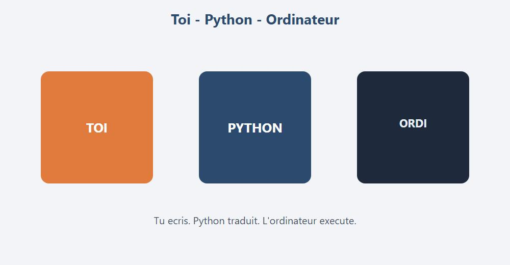
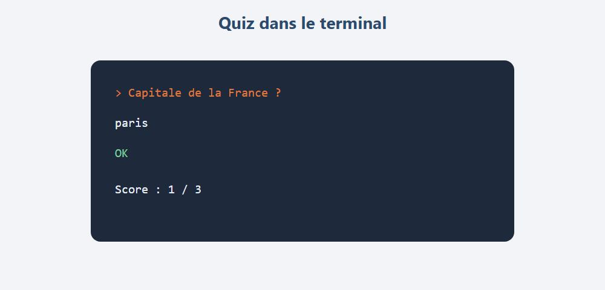
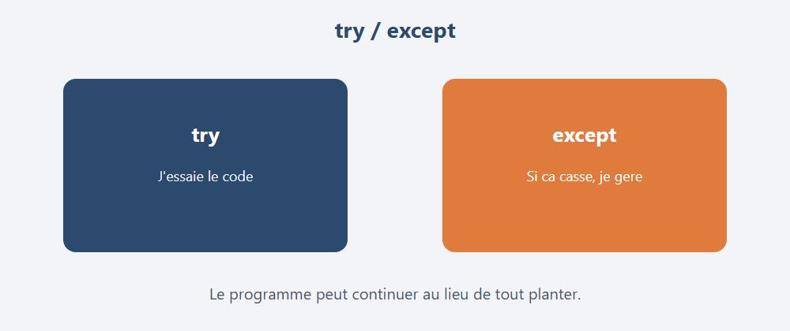
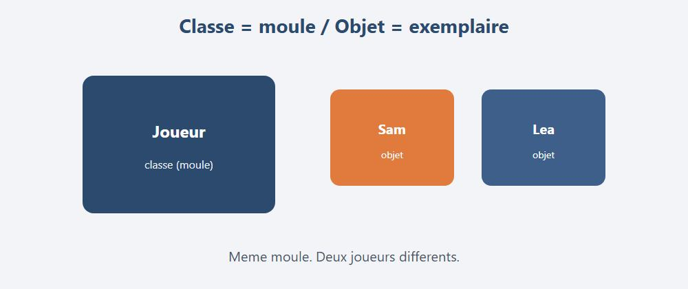

Les bases de Python, puis un cran plus loin : fichiers JSON, exceptions, classes.
DanielCraft - Livre debutant
Chapitre 1
Chapitre 1 - Salut, c'est quoi Python ?

Python sert a donner des ordres simples a l'ordinateur.
Python, c'est un langage pour donner des ordres a l'ordinateur.
Avec des phrases plus lisibles que beaucoup d'autres langages.
Tu ecris une idee.
Python la traduit.
L'ordinateur execute.
A quoi ca sert ?
Tu peux ecrire de petits scripts utiles au quotidien, ou automatiser des trucs repetitifs qui te font perdre du temps. Ca t'apprend aussi la logique : conditions, boucles, et la facon de decouper un probleme. Plus tard, tu pourras aller vers la data, l'IA, les sites web ou les bots. Ici, on reste sur des bases solides. Puis on touche un peu a des notions plus avancees (erreurs, classes), sans devenir un manuel de 800 pages.
Pourquoi commencer par Python ?
Parce que c'est accueillant.
Moins de "bruit" autour.
Tu vois vite un resultat a l'ecran.
Compare a d'autres langages : souvent plus de ceremonie avant le premier "Salut".
Avec Python, le premier programme tient en une ligne.
Image mentale
Tu es le chef.
Python est le messager.
L'ordinateur execute.
Si le message est flou, l'ordinateur se plaint (message d'erreur).
C'est normal. On apprend a lire ces messages.
Ce que tu vas savoir faire
Tu vas ecrire et lancer un programme. Tu manipuleras variables, types, conditions et boucles. Tu ecriras des fonctions avec parametres et return. Tu joueras avec listes, dictionnaires, et un peu de trucs plus fins. Tu liras et ecriras des fichiers (texte et JSON). Tu utiliseras des modules comme random ou math. Tu gereras des erreurs avec try/except, tu creeras une petite class, et tu feras un quiz et un jeu dans le terminal.
Comment lire ce livre
Lis un chapitre. Retape les exemples a la main. Change une valeur, puis relance. Fais le mini defi.
Si tu copies-colles sans reflechir, ca rentre moins.
Si tu tapes, ca rentre.
Mythe a casser
"Je dois tout comprendre avant d'ecrire."
Non.
Tu ecris. Ca casse. Tu corriges. Tu comprends mieux.
Allez. On installe, puis on code.
En vrai, sur le terrain
Dis a voix haute ce que tu veux que le programme fasse.
Ensuite seulement, ecris le code. Ca aide beaucoup.
Mini defi
Ecris sur papier 3 trucs que tu aimerais automatiser un jour
(ex : renommer des fichiers, calculer un score, faire un quiz).
On y reviendra.
Chapitre 2
Chapitre 2 - Installer et ecrire Python
Avant de coder, il faut un Python qui marche.
Sur Windows, le plus simple :
1. Va sur le site officiel python.org
2. Telecharge la version recente
3. Installe (coche "Add Python to PATH" si tu vois l'option)
4. Ouvre un terminal et tape : python --version
Si tu vois un numero de version, c'est bon.
Parfois c'est py --version qui marche mieux sur Windows.
Les deux existent. Garde celui qui repond.
Ou ecrire le code ?
Deux options debutant : VS Code (gratuit) avec l'extension Python, ou IDLE (fourni avec Python), plus basique mais ok. Plus tard tu peux aimer PyCharm ou autre. Pour ce livre, VS Code ou IDLE suffisent largement.
Fichier .py
Cree un dossier mes-tests-python.
Dedans, cree un fichier salut.py.
C'est ton programme.
Astuce : un dossier par projet.
Evite de tout mettre sur le Bureau en vrac.
Lancer
Dans le dossier du fichier :
python salut.py
Ou :
py salut.py
Si le terminal dit "introuvable", c'est souvent le mauvais dossier (tu n'es pas au bon endroit), ou le PATH pas coche a l'install.
La console interactive
python
Tu peux tester des lignes une par une.
Utile pour un calcul vite fait.
>>> 2 + 2
4
>>> exit()
exit() pour quitter.
Ou Ctrl+Z puis Entree sur Windows.
Virtualenv ? (apercu)
Plus tard, les projets serieux utilisent un "environnement virtuel".
Idee : isoler les bibliotheques d'un projet.
python -m venv .venv
Puis on active, puis pip install ....
Pour l'instant, tu n'en as pas besoin.
Mais le mot existe. Tu le reverras.
A toi
Verifie python --version (ou py --version). Cree le dossier et le fichier salut.py. On ecrira dedans au chapitre suivant.
Erreur classique
Tu lances python salut.py depuis le mauvais dossier.
En Python, on utilise souvent le snake_case : mots separes par _.
C'est la convention. Suis-la. Ton futur toi te remerciera.
Plusieurs infos
a = 3
b = 5
total = a + b
print(total)
Tu peux aussi echanger :
x = 1
y = 2
x, y = y, x
print(x, y) # 2 1
Constantes (habitude)
Python n'a pas de vrai const comme certains langages.
Par convention, on ecrit en MAJUSCULES ce qu'on ne veut pas changer :
MAX_ESSAIS = 5
Ce n'est pas bloque techniquement. C'est un signal pour les humains.
Attention
# piege : ecraser sans faire gaffe
score = 10
score = "dix" # autorise, mais souvent une mauvaise idee
Une variable peut changer de type. Ca ne veut pas dire que c'est clair.
Exemple complet
pseudo = "PixelFox"
niveau = 1
xp = 0
xp += 50
print(f"{pseudo} a {xp} xp")
if xp >= 50:
niveau += 1
xp -= 50
print(f"Niveau up ! Niveau {niveau}")
print(f"Etat : niveau {niveau}, xp {xp}")
A toi
Cree une variable prenom et une variable points qui commence a 0. Ajoute 10 points, puis affiche le tout avec print ou une f-string.
En vrai, sur le terrain
Retape l'exemple joueur.
Change le pseudo et le seuil d'xp. Relance.
Mini defi
Invente un mini profil (jeu, sport, ecole).
3 variables minimum. Affiche une phrase complete.
Chapitre 5
Chapitre 5 - Les types (texte, nombre, vrai/faux)
Les types, c'est la nature de ce que tu ranges dans la boite.
Texte (str)
phrase = "Bonjour"
ville = 'Lyon' # simples ou doubles, au choix
Nombre entier (int)
vies = 3
Nombre a virgule (float)
prix = 19.99
Booleen (bool)
est_connecte = True
a_fini = False
Attention : True / False avec majuscule.
Pas true comme en JS.
Conversion
input donne du texte. Pour calculer, convertis :
age_texte = input("Age ? ")
age = int(age_texte)
print("Dans 10 ans :", age + 10)
Versions courtes :
n = int(input("Nombre ? "))
prix = float(input("Prix ? "))
Si la personne ecrit "douze", int(...) plante.
Normal. Au chapitre exceptions, on apprendra a rattraper ca.
for cle, valeur in joueur.items():
print(cle, "->", valeur)
print(joueur.keys())
print(joueur.values())
Liste de dictionnaires
equipe = [
{"prenom": "Sam", "score": 120},
{"prenom": "Lea", "score": 95},
]
print(equipe[0]["prenom"])
for j in equipe:
print(f"{j['prenom']} : {j['score']}")
Compter avec un dico
votes = ["chat", "chien", "chat", "oiseau", "chat"]
compteur = {}
for mot in mots:
compteur[mot] = compteur.get(mot, 0) + 1
print(compteur)
Pattern tres courant.
JSON dans la tete
Un dictionnaire Python ressemble beaucoup a du JSON.
Tu t'en serviras pour sauvegarder des configs, des scores, des API...
A toi
Cree un dico livre avec titre, pages, lu (True/False).
Affiche une phrase complete.
Ajoute une cle auteur.
En vrai, sur le terrain
Fais une petite "fiche eleve" (nom, moyenne, classe).
Modifie la moyenne. Reaffiche.
Mini defi
Liste de 3 produits {nom, prix}.
Affiche le total des prix avec une boucle.
Chapitre 11
Chapitre 11 - Lire et ecrire un fichier
Parfois tu veux garder des infos hors du programme.
Sinon tout disparait a la fermeture.
Ecrire
with open("notes.txt", "w", encoding="utf-8") as f:
f.write("Salut\n")
f.write("Deuxieme ligne\n")
with ferme le fichier proprement. Prends le reflexe.
Lire
with open("notes.txt", "r", encoding="utf-8") as f:
contenu = f.read()
print(contenu)
Lire ligne par ligne
with open("notes.txt", "r", encoding="utf-8") as f:
for ligne in f:
print(">", ligne.strip())
Modes utiles
Le mode "w" ecrit (et ecrase). "a" ajoute a la fin. "r" lit seulement.
JSON (plus avance, tres utile)
import json
data = {"prenom": "Sam", "score": 120}
with open("joueur.json", "w", encoding="utf-8") as f:
json.dump(data, f, ensure_ascii=False, indent=2)
with open("joueur.json", "r", encoding="utf-8") as f:
charge = json.load(f)
print(charge["score"])
JSON = format texte standard pour echanger des donnees.
Parfait pour sauvegarder un score ou une config.
pathlib (apercu)
from pathlib import Path
p = Path("notes.txt")
print(p.exists())
print(p.read_text(encoding="utf-8"))
Plus moderne que open seul pour certains cas.
Les deux cohabitent.
Erreurs classiques
Un mauvais dossier donne souvent "fichier introuvable". Oublier encoding="utf-8" foire les accents. Et le mode "w" ecrase sans prevenir.
A toi
Ecris ton prenom dans moi.txt.
Relis le fichier et affiche-le.
Puis sauvegarde un petit dico dans moi.json.
En vrai, sur le terrain
Ajoute 3 lignes dans un journal journal.txt en mode "a".
Relance 2 fois. Verifie que ca s'allonge.
Mini defi
Programme qui demande un score, le sauve en JSON, le recharge, l'affiche.
Chapitre 12
Chapitre 12 - Les modules (import)
Un module = une boite a outils deja prete.
import math
print(math.sqrt(16))
print(math.pi)
random
import random
print(random.randint(1, 6)) # de 1 a 6 inclus
print(random.choice(["rouge", "vert", "bleu"]))
print(random.random()) # flottant entre 0 et 1
from datetime import datetime
maintenant = datetime.now()
print(maintenant.strftime("%Y-%m-%d %H:%M"))
Utile pour dater un log ou un score.
from ... import
from math import pi, sqrt
print(pi, sqrt(9))
Creer ton module
Fichier outils.py :
def double(n):
return n * 2
Autre fichier :
import outils
print(outils.double(5))
Pratique quand le projet grandit.
pip (apercu)
Pour installer une bibliotheque tierce :
pip install requests
Puis :
# import requests # apres install
On ne l'utilise pas dans ce livre.
Mais tu dois connaitre le reflexe : module standard d'abord, pip ensuite.
A toi
Simule un de a 6 faces 5 fois avec une boucle.
Affiche aussi la somme des jets.
En vrai, sur le terrain
Melange une liste de 5 prenoms avec shuffle, affiche le premier "tire au sort".
Mini defi
Petit "oracle" : tire une phrase au hasard dans une liste de 5 conseils.
Chapitre 13
Chapitre 13 - Mini-projet : quiz terminal

Mini projet : un petit quiz dans le terminal.
On assemble ce qu'on sait : variables, conditions, boucles, listes, dicos.
Version simple
score = 0
reponse = input("Capitale de la France ? ")
if reponse.strip().lower() == "paris":
print("OK")
score = score + 1
else:
print("Non, c'etait Paris")
reponse = input("2 + 2 = ? ")
if reponse.strip() == "4":
print("OK")
score = score + 1
else:
print("Non, 4")
reponse = input("Langage de ce livre ? ")
if reponse.strip().lower() == "python":
print("OK")
score = score + 1
else:
print("Python !")
print("Score final :", score, "/ 3")
Version plus propre
questions = [
{"q": "Capitale de la France ?", "a": "paris"},
{"q": "2 + 2 = ?", "a": "4"},
{"q": "Langage de ce livre ?", "a": "python"},
]
score = 0
for item in questions:
rep = input(item["q"] + " ").strip().lower()
if rep == item["a"]:
print("OK")
score += 1
else:
print("Non, reponse :", item["a"])
print(f"Score : {score} / {len(questions)}")
Ameliorations
Tu peux melanger l'ordre avec random.shuffle. Sauvegarde le meilleur score dans un fichier JSON. Ajoute 2 questions perso. Affiche un message selon le score (bien / moyen / a revoir).
Version avec shuffle + JSON
import json
import random
from pathlib import Path
questions = [
{"q": "Capitale de la France ?", "a": "paris"},
{"q": "2 + 2 = ?", "a": "4"},
{"q": "Langage de ce livre ?", "a": "python"},
{"q": "Couleur du ciel (souvent) ?", "a": "bleu"},
]
random.shuffle(questions)
score = 0
for item in questions:
rep = input(item["q"] + " ").strip().lower()
if rep == item["a"]:
print("OK")
score += 1
else:
print("Non :", item["a"])
print(f"Score : {score}/{len(questions)}")
fichier = Path("meilleur_score.json")
meilleur = 0
if fichier.exists():
meilleur = json.loads(fichier.read_text(encoding="utf-8")).get("score", 0)
if score > meilleur:
fichier.write_text(json.dumps({"score": score}, indent=2), encoding="utf-8")
print("Nouveau record !")
else:
print("Record actuel :", meilleur)
Criteres
Vise au moins 3 questions (idealement 5). Affiche le score a la fin. Compare de facon souple avec strip et lower.
En vrai, sur le terrain
Retape la version propre sans copier-coller.
Change les questions. Relance 2 fois.
Mini defi
Ajoute le melange + sauvegarde du record.
Chapitre 14
Chapitre 14 - Ce qu'il faut retenir (bases)
Tu as les bases. Ensuite : exceptions + classes, puis ateliers.
En une minute
Tu as vu print, input et les f-strings. Les variables se nomment souvent en snake_case. Les types courants sont str, int, float, bool et None. Tu sais brancher avec if / elif / else, et repeter avec for / while (plus break et continue). Les fonctions renvoient avec return (et tu as un apercu de *args). Cote collections : listes (slices, comprehension), tuples, sets, et dictionnaires avec .get. Tu sais lire et ecrire des fichiers texte et du JSON, et importer des modules (math, random, json, datetime...).
Habitudes
Garde une indentation propre (4 espaces) et des noms clairs. Teste souvent. Lis les messages d'erreur sans paniquer. Prefere des petites fonctions. Pour les fichiers, prends le reflexe with open(...).
Erreurs classiques
On oublie souvent : apres if, for ou def. Une mauvaise indentation fait tout planter. Comparer un nombre avec un texte ("4" vs 4) donne des resultats bizarres. Un fichier "introuvable", c'est souvent le mauvais dossier. Et deux classiques : confondre = et ==, ou confondre print et return.
Carte mentale
D'abord les donnees (variables, listes, dicos). Puis les decisions (if). Ensuite les repetitions (boucles). Puis l'organisation (fonctions, modules). Enfin la memoire (fichiers / JSON).
Suite immediate
Deux chapitres un cran au-dessus : gerer les plantages avec try/except, puis modeliser avec une class. Puis ateliers + quiz.
Mini check
Sans regarder : ecris de memoire un if, un for, une fonction avec return.
Si ca vient, tu es pret pour la suite.
Chapitre 15
Chapitre 15 - Les exceptions (try / except)

try : j'essaie. except : je rattrape.
Parfois le programme plante.
Pas grave. On peut rattraper.
Exemple classique : l'utilisateur tape une lettre au lieu d'un nombre.
texte = input("Nombre ? ")
try:
n = int(texte)
print("Tu as choisi", n)
except ValueError:
print("Ce n'est pas un nombre.")
try = j'essaie.
except = si ca casse de cette facon, je fais autre chose.
Plusieurs erreurs
try:
a = int(input("a ? "))
b = int(input("b ? "))
print(a / b)
except ValueError:
print("Il faut des nombres.")
except ZeroDivisionError:
print("Division par zero interdite.")
else et finally
try:
n = int(input("Nombre ? "))
except ValueError:
print("Nope")
else:
print("OK, n =", n) # seulement si pas d'erreur
finally:
print("Toujours execute")
finally sert souvent a "nettoyer" (fermer un truc), meme en cas d'erreur.
raise (lever une erreur)
def age_valide(age):
if age < 0:
raise ValueError("Age negatif impossible")
return age
print(age_valide(12))
# print(age_valide(-1)) # plante volontairement
Utile dans tes fonctions : signaler un probleme clair.
Ne pas tout avaler
Mauvais reflexe :
try:
faire_un_truc()
except:
pass # silence total = tu ne vois plus rien
Mieux : attraper l'erreur precise, ou au moins afficher un message.
Fichier manquant
from pathlib import Path
p = Path("secret.txt")
try:
print(p.read_text(encoding="utf-8"))
except FileNotFoundError:
print("Fichier introuvable. On continue.")
Exemple utile : saisie solide
def demander_int(message):
while True:
try:
return int(input(message))
except ValueError:
print("Un entier, s'il te plait.")
age = demander_int("Age ? ")
print("Age =", age)
Tu peux reutiliser ca partout.
A toi
Reprends le juste prix (ou un int(input(...))).
Entoure la conversion avec try/except.
Si erreur : message + redemande.
En vrai, sur le terrain
Fais planter volontairement int("bonjour") sans try.
Lis l'erreur. Puis protege.
Mini defi
Fonction diviser(a, b) qui renvoie le resultat ou None si division par zero,
avec un message clair.
Chapitre 16
Chapitre 16 - Les classes (objets)

Une classe = un moule. Un objet = un exemplaire.
Jusqu'ici : fonctions + donnees separees.
Une classe, c'est coller les deux : "une fiche avec des actions".
equipe = [Joueur("Sam"), Joueur("Lea", 50), Joueur("Noe")]
for j in equipe:
j.gagner(5)
print(j.presenter())
Chaque joueur a son propre score.
Pas besoin de 3 variables score_sam, score_lea...
Methode vs fonction
Une fonction ressemble a presenter(joueur). Une methode ressemble a joueur.presenter(). Meme idee, style different. Les methodes vivent avec les donnees.
class Boss(Joueur):
def gagner(self, points):
# le boss gagne double
self.score += points * 2
Une classe peut specialiser une autre.
Utile plus tard. Pas obligatoire maintenant.
Dataclass (tres moderne, apercu)
from dataclasses import dataclass
@dataclass
class Produit:
nom: str
prix: float
p = Produit("Stylo", 1.5)
print(p.nom, p.prix)
Python ecrit une partie du boilerplate pour toi.
Tu le verras dans du code recent.
Quand utiliser une classe ?
Quand tu as plusieurs donnees liees et des actions dessus. Ou plusieurs "exemplaires" du meme genre (joueurs, produits, ennemis). Si c'est juste 2 fonctions et 1 variable : une fonction suffit. Pas besoin de classe partout.
A toi
Cree Compte avec solde.
Methodes deposer(montant) et retirer(montant).
Refuse un retrait trop grand (message ou exception).
En vrai, sur le terrain
Cree 2 joueurs. Fais-les gagner des points. Affiche le plus fort.
Mini defi
Classe Question avec texte et reponse.
Methode poser() qui fait l'input et renvoie True/False.
Branche ca sur ton quiz.
Chapitre 17
Chapitre 17 - Atelier : lire les erreurs
Le terminal parle. Apprends a l'ecouter.
Une erreur, c'est un GPS, pas une insulte.
NameError
Tu utilises un nom inconnu.
Souvent une faute de frappe : scroe au lieu de score.
TypeError
Tu melanges mal les types.
Ex : "3" + 1
ValueError
Conversion impossible.
Ex : int("bonjour")
IndexError / KeyError
liste = [1, 2]
print(liste[5]) # IndexError
d = {"a": 1}
print(d["b"]) # KeyError
IndentationError / SyntaxError
Deux points : oublie, ou decalage foireux.
Ou parenthese non fermee.
FileNotFoundError
Mauvais chemin, mauvais dossier, fichier pas encore cree.
Methode
Lis d'abord la derniere ligne de l'erreur (le type). Va au numero de ligne. Corrige le plus petit truc, puis relance. Si besoin, entoure avec try/except - mais comprends d'abord.
Exercice 1
Casse volontairement ton quiz (enleve un :).
Lis l'erreur. Repare.
Exercice 2
Fais un int(input(...)) et tape abc.
Puis protege avec try/except comme au chapitre 15.
Exercice 3
Ouvre un fichier qui n'existe pas.
Attrape FileNotFoundError. Affiche un message propre.
Check final atelier
Tu sais nommer 4 types d'erreurs courants, trouver la ligne fautive, et corriger sans tout reecrire.
Chapitre 18
Chapitre 18 - Atelier : juste prix
L'ordinateur choisit un nombre. Tu cherches.
Version de base (avec try)
import random
secret = random.randint(1, 20)
essais = 0
MAX = 6
while essais < MAX:
essais += 1
try:
proposition = int(input(f"Essai {essais}/{MAX} - Nombre 1..20 ? "))
except ValueError:
print("Un nombre, merci.")
continue
if proposition < secret:
print("Plus grand")
elif proposition > secret:
print("Plus petit")
else:
print(f"Bravo ! Trouve en {essais} essais")
break
else:
print(f"Perdu. C'etait {secret}")
Le else du while s'execute si on ne break pas.
Pratique pour le message de defaite.
Variantes
Demande si on rejoue (o/n). Garde le meilleur score (moins d'essais) dans un JSON. Ajoute une difficulte : facile 1-10, normal 1-20, dur 1-50. En version objet, une classe Partie avec secret, essais et jouer().
Version objet (bonus)
import random
class Partie:
def __init__(self, maximum=20, max_essais=6):
self.secret = random.randint(1, maximum)
self.maximum = maximum
self.max_essais = max_essais
self.essais = 0
def jouer(self):
while self.essais < self.max_essais:
self.essais += 1
try:
n = int(input(f"1..{self.maximum} ? "))
except ValueError:
print("Nombre invalide")
continue
if n == self.secret:
print("Gagne")
return True
print("Plus grand" if n < self.secret else "Plus petit")
print("Perdu :", self.secret)
return False
if __name__ == "__main__":
Partie().jouer()
A toi
Implemente au moins un max d'essais, un message de defaite, et une saisie protegee (try/except).
Mini defi
Ajoute le mode rejouer + sauvegarde du record.
Chapitre 19
Chapitre 19 - Atelier : organiser son code
Quand ca grandit, on coupe en fonctions (et parfois en classes).
Version fonctions
def poser_question(texte, bonne):
rep = input(texte + " ").strip().lower()
if rep == bonne:
print("OK")
return True
print("Non, c'etait", bonne)
return False
def main():
score = 0
if poser_question("Capitale de la France ?", "paris"):
score += 1
if poser_question("2 + 2 = ?", "4"):
score += 1
print("Score :", score)
if __name__ == "__main__":
main()
Pourquoi if __name__ == "__main__" ?
Ca veut dire : "lance main() seulement si on execute ce fichier directement".
Utile quand tu importeras ce fichier ailleurs.
Version classe Question
class Question:
def __init__(self, texte, reponse):
self.texte = texte
self.reponse = reponse
def poser(self):
rep = input(self.texte + " ").strip().lower()
ok = rep == self.reponse
print("OK" if ok else f"Non : {self.reponse}")
return ok
def main():
quiz = [
Question("Capitale de la France ?", "paris"),
Question("2 + 2 = ?", "4"),
Question("Langage de ce livre ?", "python"),
]
score = sum(1 for q in quiz if q.poser())
print(f"Score : {score}/{len(quiz)}")
if __name__ == "__main__":
main()
Decouper en fichiers (idee)
Tu peux mettre les donnees ou la classe Question dans questions.py, la logique dans jeu.py, et le point d'entree dans main.py. Meme sur un petit projet, ca clarifie.
Regle simple
Une fonction / methode = une responsabilite.
poser pose.
main organise.
A toi
Reprends ton quiz. Decoupe avec au moins 2 fonctions. En bonus, passe en classe Question. En bonus 2, sauve le score en JSON.
Check
Si tu rouvres le fichier dans 2 semaines et tu comprends encore :
c'est bien organise.
Quiz
Quiz final - Teste-toi !
Questions
Q1.print("Salut") sert a :
A) Lire un fichier
B) Afficher a l'ecran
C) Installer Python
Q2.input(...) renvoie surtout :
A) un int
B) un str (texte)
C) un bool
Q3. Pour convertir "12" en nombre :
A) str(12)
B) int("12")
C) print("12")
Q4. Apres if age >= 18: on doit :
A) Indenter le bloc
B) Fermer avec end
C) Mettre une virgule
Q5.range(1, 4) donne :
A) 1, 2, 3, 4
B) 1, 2, 3
C) 0, 1, 2, 3
Q6.return dans une fonction :
A) Affiche toujours
B) Renvoie une valeur
C) Efface la variable
Q7. Dans ["a", "b"], index de "a" :
A) 1
B) 0
C) 2
Q8. Un dictionnaire associe :
A) index numerique seulement
B) cles -> valeurs
C) uniquement des bool
Q9.with open(...) as f: c'est bien parce que :
A) Ca colore le texte
B) Ca gere l'ouverture/fermeture proprement
C) Ca remplace print
Q10.random.randint(1, 6) :
A) Tire un entier de 1 a 6
B) Affiche toujours 6
C) Cree un fichier
Q11.True et False s'ecrivent :
A) true / false
B) True / False
C) TRUE / FALSE seulement
Q12. Indentation en Python :
A) Optionnelle
B) Importante (fait partie de la syntaxe)
C) Interdite
Q13.try/except sert surtout a :
A) Accelerer le code
B) Rattraper une erreur sans tout planter
C) Creer une variable
Q14. Dans une classe, __init__ :
A) Supprime l'objet
B) Initialise l'objet a la creation
C) Importe un module
Q15.json.dump sert a :
A) Lire un JSON depuis un fichier
B) Ecrire un objet Python en JSON dans un fichier
C) Afficher du HTML
Q16.liste[-1] :
A) Erreur toujours
B) Dernier element
C) Premier element
Q17.score += 1 equivalent a :
A) score = score + 1
B) score = 1
C) print(score)
Q18.break dans une boucle :
A) Recommence le tour
B) Sort de la boucle
C) Quitte Python
Reponses
1 B, 2 B, 3 B, 4 A, 5 B, 6 B, 7 B, 8 B, 9 B, 10 A,
11 B, 12 B, 13 B, 14 B, 15 B, 16 B, 17 A, 18 B
Score
16-18 : nickel. 12-15 : bien, relis exceptions + classes + JSON. 8-11 : refais 5, 6, 8, 11, 15. Moins de 8 : reprends les chapitres 3 a 10 tranquillement.
Final
Bravo.
Bravo. Tu as les bases de Python.
Tu as fini ce livre Python.
Pas "je connais tout".
Mais "je sais ecrire un programme, le faire tourner, le corriger, et le structurer". C'est deja enorme.
Ce que tu sais faire
Tu sais installer et lancer Python. Tu manipules variables, types, conditions et boucles. Tu ecris des fonctions (parametres, return, apercu *args). Tu te debrouilles avec listes (slices, comprehensions) et dicos. Tu lis et ecris des fichiers texte et du JSON. Tu utilises des modules (random, math, json...). Tu geres les exceptions avec try/except. Tu as cree une premiere class. Et tu as fait un quiz et un juste prix.
Mission finale
Ameliore ton juste prix en mode "produit mini". Limite a 6 essais avec un message de defaite. Protege la saisie. Propose de rejouer. Sauve le record en JSON. En bonus, une classe Partie.
La suite (quand tu voudras)
Tu pourras explorer virtualenv et pip, puis Requests pour parler a une API. Un peu de data (pandas) ou de web (Flask/FastAPI). Des tests automatiques avec pytest. Et lire du code des autres sur GitHub.
Mais la, respire.
Encore bravo.
Tu parles a l'ordinateur. Et maintenant, tu geres aussi quand il rale.